-
Deposit
17:53:06 PM / 33:02:924 Pass
Deposit
10.29.2024 17:53:06 10.29.2024 17:56:09 33:02:924 · #test-id=2PassDeposit partial withdrawalWhen close all the other opened windowsWhen User opens the T24 Url Then User should be able to login to T24
Then User should be able to login to T24 Then The user should be able to fill the commandlineAnd navigate to find deposit option for partial wthdrawalThen open the depositAnd click on Partial withdrawalThen Enter the partial withdrawal amountThen Click on validateAnd Click on commitThen click on accept override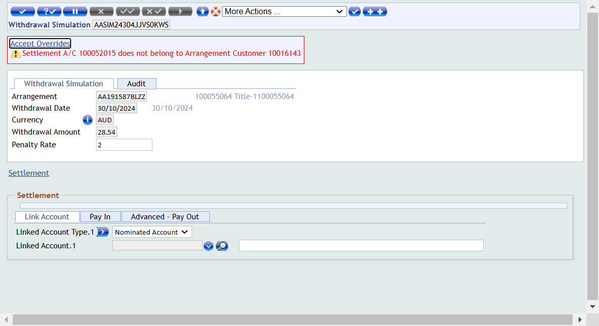Then Verify whether the transaction complete message is displayed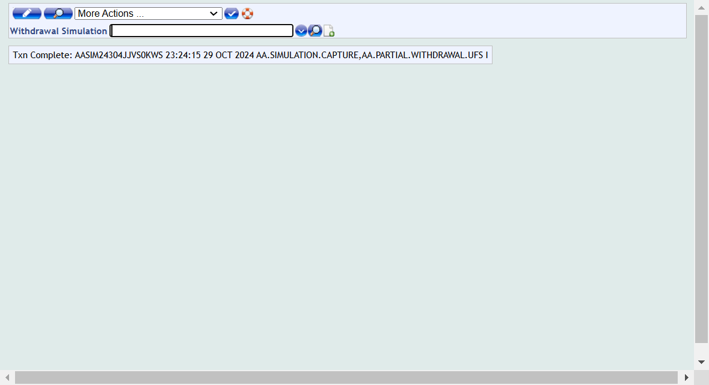And verify simulation status becomes Completed - SuccessfullyThen switch back to main windowThen The user should be able to fill the commandlineAnd navigate to find deposit option for partial wthdrawalThen open the depositAnd Click on the withdrawal statementThen Proceed to partial withdrawalThen Click on validateAnd Click on commitThen click on accept override
Then The user should be able to fill the commandlineAnd navigate to find deposit option for partial wthdrawalThen open the depositAnd click on Partial withdrawalThen Enter the partial withdrawal amountThen Click on validateAnd Click on commitThen click on accept override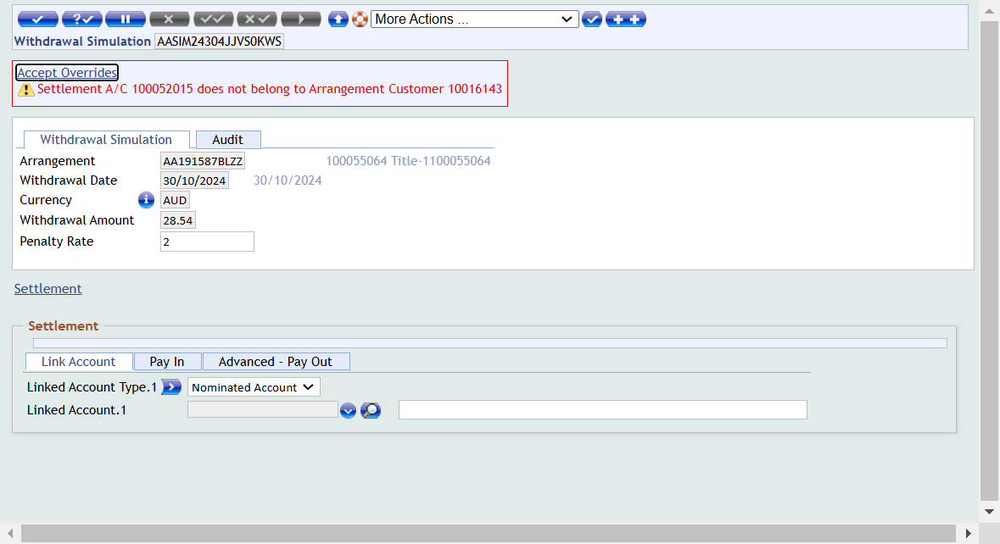Then Verify whether the transaction complete message is displayed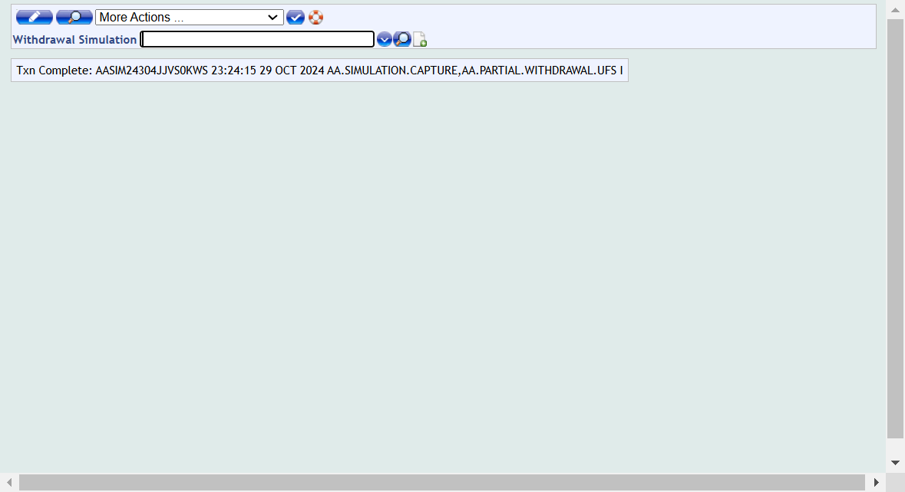And verify simulation status becomes Completed - SuccessfullyThen switch back to main windowThen The user should be able to fill the commandlineAnd navigate to find deposit option for partial wthdrawalThen open the depositAnd Click on the withdrawal statementThen Proceed to partial withdrawalThen Click on validateAnd Click on commitThen click on accept override Then Verify whether the transaction complete message is displayed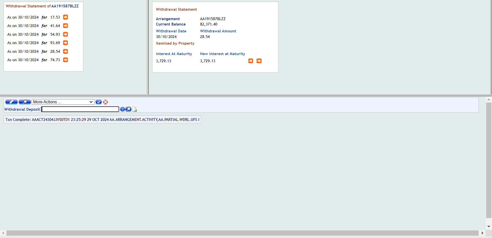Then switch back to main windowThen The user should be able to fill the commandlineAnd click on the IB-view of account entriesThen Enter the account number of deposit in the IB view of account entriesAnd Enter the date in ibview formatAnd click on find buttonThen Check the narratives of Partial Withdrawal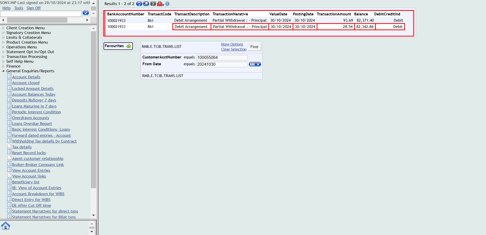
Then Verify whether the transaction complete message is displayed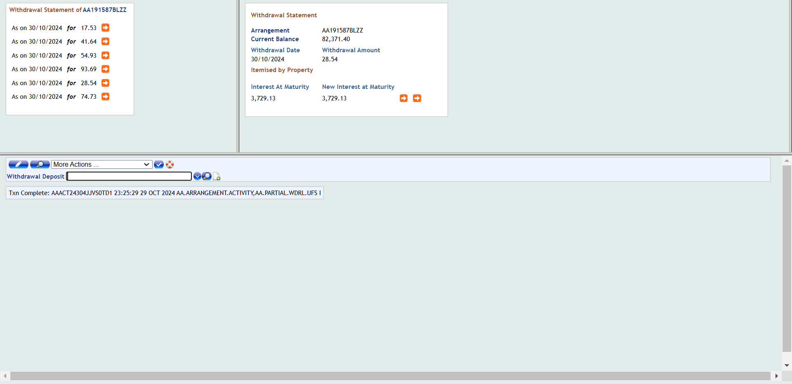Then switch back to main windowThen The user should be able to fill the commandlineAnd click on the IB-view of account entriesThen Enter the account number of deposit in the IB view of account entriesAnd Enter the date in ibview formatAnd click on find buttonThen Check the narratives of Partial Withdrawal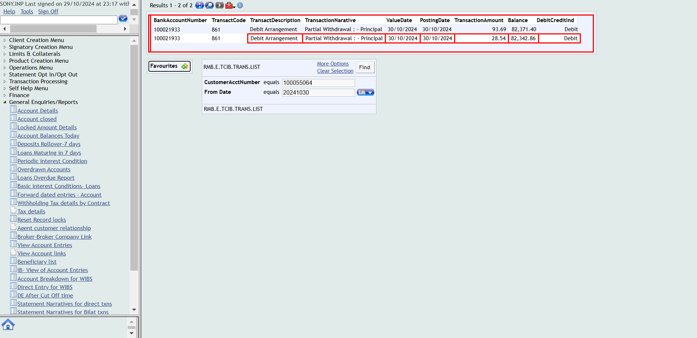 -
Lending operations
17:56:37 PM / 46:05:306 Fail
Lending operations
10.29.2024 17:56:37 10.29.2024 18:12:42 46:05:306 · #test-id=161FailLoan CreationWhen close all the other opened windowsWhen User opens the T24 Url Then User should be able to login to T24
Then User should be able to login to T24 Then The user should be able to fill the commandlineAnd Navigate to Product catalogThen click on commercial loan New ArrangementAnd fill the customer number in customer fieldThen Click on validateAnd Provide the loan interest detailsThen enter the commitment amount and termAnd Select the account mandate recordThen Click on validate after entering loan detailsAnd Click on commitcom.frameium.stepdef.Hooks.afterEveryStep(io.cucumber.java.Scenario)
Then The user should be able to fill the commandlineAnd Navigate to Product catalogThen click on commercial loan New ArrangementAnd fill the customer number in customer fieldThen Click on validateAnd Provide the loan interest detailsThen enter the commitment amount and termAnd Select the account mandate recordThen Click on validate after entering loan detailsAnd Click on commitcom.frameium.stepdef.Hooks.afterEveryStep(io.cucumber.java.Scenario) Then Verify whether the transaction complete message is displayedStep skippedAnd switch back to main windowStep skippedAnd The User clicks on signoffStep skippedWhen close all the other opened windowsStep skippedThen Login to authoriser accountStep skippedThen The user should be able to fill the commandlineStep skippedAnd user should be able to navigate to find unauthorised loanStep skippedThen open the newly created loanStep skippedAnd authorise the loanStep skippedThen Verify whether the transaction complete message is displayedStep skippedAnd switch back to main windowStep skippedAnd The User clicks on signoffStep skippedThen User should be able to login to T24Step skippedThen The user should be able to fill the commandlineStep skippedAnd user should be able to navigate to find loanStep skippedThen open the newly created loanStep skippedThen verify the newly created loanStep skippedThen switch back to main windowStep skippedWhen close all the other opened windowsStep skippedThen The user should be able to fill the commandlineStep skippedAnd user should be able to navigate to find loanStep skippedThen open the Newly created loanStep skippedAnd Click on desbursementStep skippedThen Enter the desbursement details for loanStep skippedThen Click on validateStep skippedAnd Click on commitStep skippedThen click on accept overrideStep skippedThen Verify whether the transaction complete message is displayedStep skippedThen switch back to main windowStep skippedWhen close all the other opened windowsStep skippedAnd The User clicks on signoffStep skippedThen Login to authoriser accountStep skippedThen The user should be able to fill the commandlineStep skippedAnd user should be able to navigate to find loanStep skippedThen open the Newly created loanStep skippedAnd Authorise the desbusement for the loanStep skippedThen switch back to main windowStep skippedThen The user should be able to fill the commandlineStep skippedAnd user should be able to navigate to find loanStep skippedThen open the Newly created loanStep skippedThen Verify whether the status of the loan is currentStep skippedPassLoan CreationWhen close all the other opened windowsWhen User opens the T24 Url
Then Verify whether the transaction complete message is displayedStep skippedAnd switch back to main windowStep skippedAnd The User clicks on signoffStep skippedWhen close all the other opened windowsStep skippedThen Login to authoriser accountStep skippedThen The user should be able to fill the commandlineStep skippedAnd user should be able to navigate to find unauthorised loanStep skippedThen open the newly created loanStep skippedAnd authorise the loanStep skippedThen Verify whether the transaction complete message is displayedStep skippedAnd switch back to main windowStep skippedAnd The User clicks on signoffStep skippedThen User should be able to login to T24Step skippedThen The user should be able to fill the commandlineStep skippedAnd user should be able to navigate to find loanStep skippedThen open the newly created loanStep skippedThen verify the newly created loanStep skippedThen switch back to main windowStep skippedWhen close all the other opened windowsStep skippedThen The user should be able to fill the commandlineStep skippedAnd user should be able to navigate to find loanStep skippedThen open the Newly created loanStep skippedAnd Click on desbursementStep skippedThen Enter the desbursement details for loanStep skippedThen Click on validateStep skippedAnd Click on commitStep skippedThen click on accept overrideStep skippedThen Verify whether the transaction complete message is displayedStep skippedThen switch back to main windowStep skippedWhen close all the other opened windowsStep skippedAnd The User clicks on signoffStep skippedThen Login to authoriser accountStep skippedThen The user should be able to fill the commandlineStep skippedAnd user should be able to navigate to find loanStep skippedThen open the Newly created loanStep skippedAnd Authorise the desbusement for the loanStep skippedThen switch back to main windowStep skippedThen The user should be able to fill the commandlineStep skippedAnd user should be able to navigate to find loanStep skippedThen open the Newly created loanStep skippedThen Verify whether the status of the loan is currentStep skippedPassLoan CreationWhen close all the other opened windowsWhen User opens the T24 Url Then User should be able to login to T24
Then User should be able to login to T24 Then The user should be able to fill the commandlineAnd Navigate to Product catalogThen click on commercial loan New ArrangementAnd fill the customer number in customer fieldThen Click on validateAnd Provide the loan interest detailsThen enter the commitment amount and termAnd Select the account mandate recordThen Click on validate after entering loan detailsAnd Click on commitThen Verify whether the transaction complete message is displayed
Then The user should be able to fill the commandlineAnd Navigate to Product catalogThen click on commercial loan New ArrangementAnd fill the customer number in customer fieldThen Click on validateAnd Provide the loan interest detailsThen enter the commitment amount and termAnd Select the account mandate recordThen Click on validate after entering loan detailsAnd Click on commitThen Verify whether the transaction complete message is displayed And switch back to main windowAnd The User clicks on signoffWhen close all the other opened windowsThen Login to authoriser accountThen The user should be able to fill the commandlineAnd user should be able to navigate to find unauthorised loanThen open the newly created loanAnd authorise the loanThen Verify whether the transaction complete message is displayed
And switch back to main windowAnd The User clicks on signoffWhen close all the other opened windowsThen Login to authoriser accountThen The user should be able to fill the commandlineAnd user should be able to navigate to find unauthorised loanThen open the newly created loanAnd authorise the loanThen Verify whether the transaction complete message is displayed And switch back to main windowAnd The User clicks on signoffThen User should be able to login to T24Then The user should be able to fill the commandlineAnd user should be able to navigate to find loanThen open the newly created loanThen verify the newly created loanThen switch back to main windowWhen close all the other opened windowsThen The user should be able to fill the commandlineAnd user should be able to navigate to find loanThen open the Newly created loanAnd Click on desbursementThen Enter the desbursement details for loanThen Click on validateAnd Click on commitThen click on accept override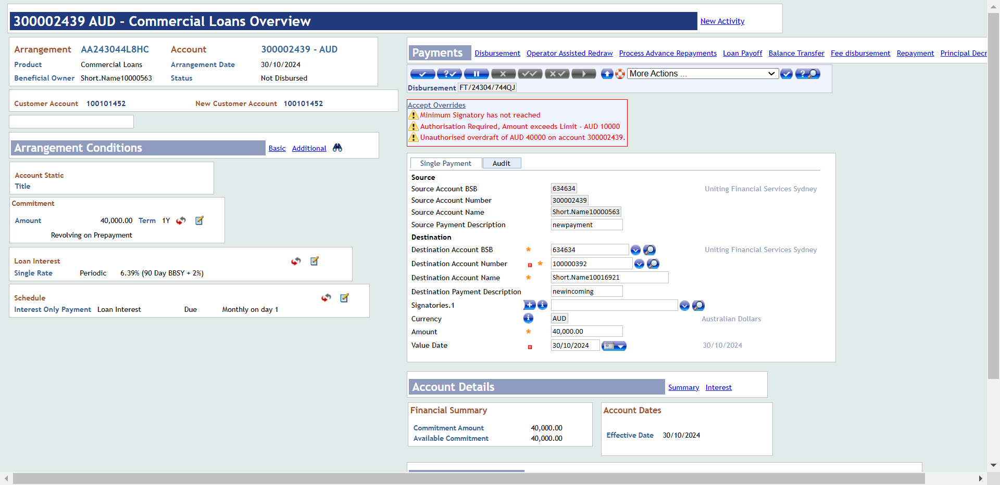Then Verify whether the transaction complete message is displayed
And switch back to main windowAnd The User clicks on signoffThen User should be able to login to T24Then The user should be able to fill the commandlineAnd user should be able to navigate to find loanThen open the newly created loanThen verify the newly created loanThen switch back to main windowWhen close all the other opened windowsThen The user should be able to fill the commandlineAnd user should be able to navigate to find loanThen open the Newly created loanAnd Click on desbursementThen Enter the desbursement details for loanThen Click on validateAnd Click on commitThen click on accept override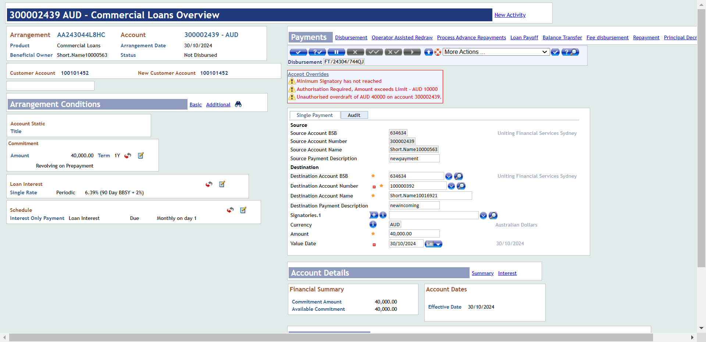Then Verify whether the transaction complete message is displayed Then switch back to main windowWhen close all the other opened windowsAnd The User clicks on signoffThen Login to authoriser accountThen The user should be able to fill the commandlineAnd user should be able to navigate to find loanThen open the Newly created loanAnd Authorise the desbusement for the loanThen switch back to main windowThen The user should be able to fill the commandlineAnd user should be able to navigate to find loanThen open the Newly created loanThen Verify whether the status of the loan is current
Then switch back to main windowWhen close all the other opened windowsAnd The User clicks on signoffThen Login to authoriser accountThen The user should be able to fill the commandlineAnd user should be able to navigate to find loanThen open the Newly created loanAnd Authorise the desbusement for the loanThen switch back to main windowThen The user should be able to fill the commandlineAnd user should be able to navigate to find loanThen open the Newly created loanThen Verify whether the status of the loan is current FailLoan ClosureWhen close all the other opened windowsWhen close all the other opened windowsWhen User opens the T24 Url
FailLoan ClosureWhen close all the other opened windowsWhen close all the other opened windowsWhen User opens the T24 Url Then User should be able to login to T24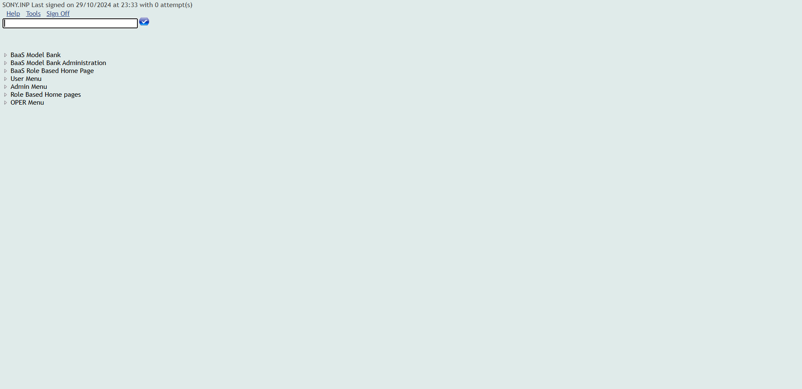Then The user should be able to fill the commandlineAnd user should be able to navigate to find loanThen open the loan that need to be closedAnd Click on request payoffThen from the newly opened window select the reason for loan closureThen Click on validateAnd Click on commitThen click on accept override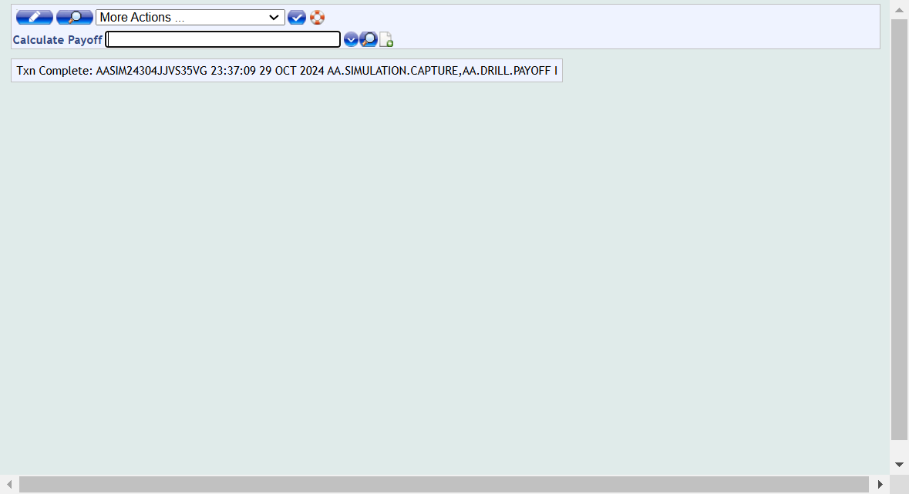And verify simulation status becomes Executed - SuccessfullyThen switch back to main windowWhen close all the other opened windowsThen The user should be able to fill the commandlineAnd user should be able to navigate to find loanThen open the loan that need to be closedThen click on the payoff statement from overfiew screen of loanThen switch back to main windowThen The user should be able to fill the commandlineAnd user should be able to navigate to find loanThen open the loan that need to be closedAnd click on loan payoffThen Enter the loan payoff detailsThen Click on validateAnd Click on commitThen click on accept override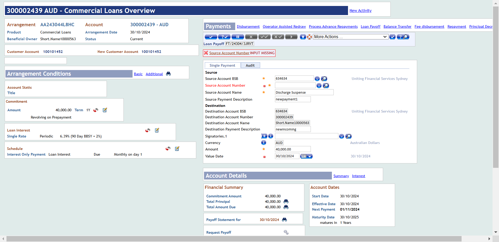Then Verify whether the transaction complete message is displayedcom.frameium.stepdef.Hooks.afterEveryStep(io.cucumber.java.Scenario)
Then User should be able to login to T24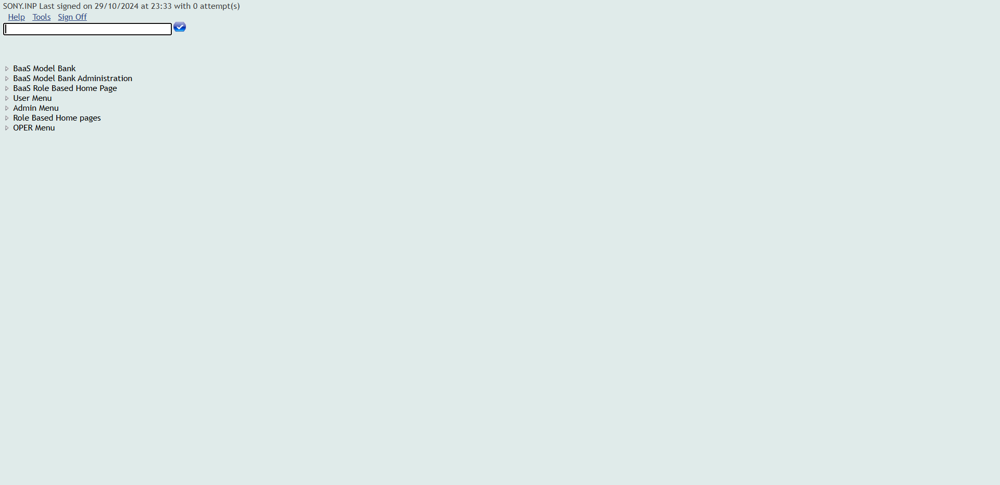Then The user should be able to fill the commandlineAnd user should be able to navigate to find loanThen open the loan that need to be closedAnd Click on request payoffThen from the newly opened window select the reason for loan closureThen Click on validateAnd Click on commitThen click on accept override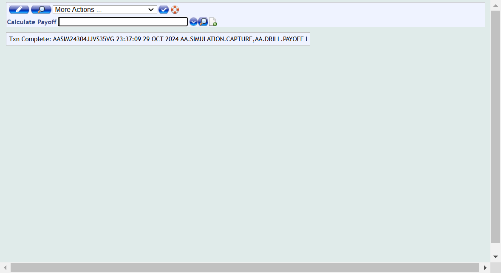And verify simulation status becomes Executed - SuccessfullyThen switch back to main windowWhen close all the other opened windowsThen The user should be able to fill the commandlineAnd user should be able to navigate to find loanThen open the loan that need to be closedThen click on the payoff statement from overfiew screen of loanThen switch back to main windowThen The user should be able to fill the commandlineAnd user should be able to navigate to find loanThen open the loan that need to be closedAnd click on loan payoffThen Enter the loan payoff detailsThen Click on validateAnd Click on commitThen click on accept override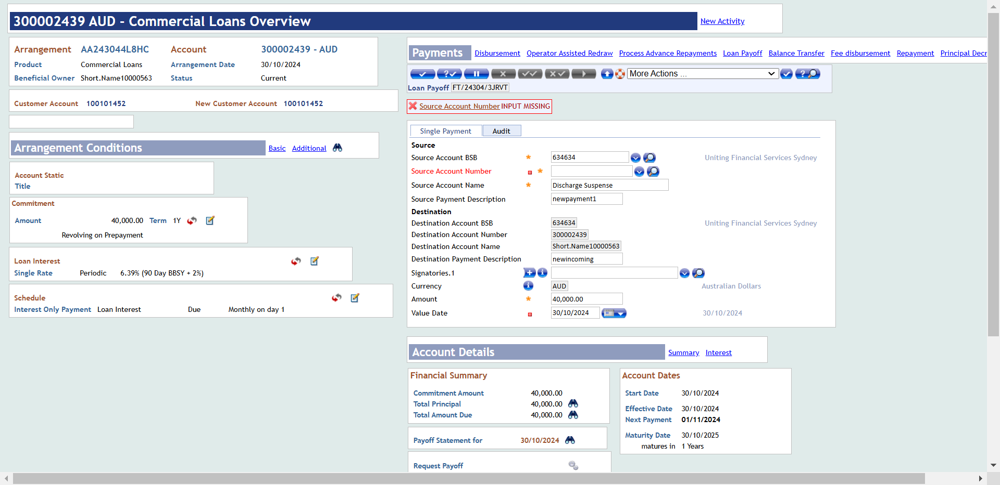Then Verify whether the transaction complete message is displayedcom.frameium.stepdef.Hooks.afterEveryStep(io.cucumber.java.Scenario) Then switch back to main windowStep skippedAnd The User clicks on signoffStep skippedWhen close all the other opened windowsStep skippedThen Login to authoriser accountStep skippedThen The user should be able to fill the commandlineStep skippedAnd user should be able to navigate to find loanStep skippedThen open the loan that need to be closedStep skippedThen authorise loanpayoffStep skippedThen switch back to main windowStep skippedThen The user should be able to fill the commandlineStep skippedAnd user should be able to navigate to find loanStep skippedThen open the loan that need to be closedStep skippedAnd verify whether the loan status is moved to pending closureStep skippedFailLoan ClosureWhen close all the other opened windowsWhen close all the other opened windowsWhen User opens the T24 Url
Then switch back to main windowStep skippedAnd The User clicks on signoffStep skippedWhen close all the other opened windowsStep skippedThen Login to authoriser accountStep skippedThen The user should be able to fill the commandlineStep skippedAnd user should be able to navigate to find loanStep skippedThen open the loan that need to be closedStep skippedThen authorise loanpayoffStep skippedThen switch back to main windowStep skippedThen The user should be able to fill the commandlineStep skippedAnd user should be able to navigate to find loanStep skippedThen open the loan that need to be closedStep skippedAnd verify whether the loan status is moved to pending closureStep skippedFailLoan ClosureWhen close all the other opened windowsWhen close all the other opened windowsWhen User opens the T24 Url Then User should be able to login to T24
Then User should be able to login to T24 Then The user should be able to fill the commandlineAnd user should be able to navigate to find loanThen open the loan that need to be closedAnd Click on request payoffcom.frameium.stepdef.Hooks.afterEveryStep(io.cucumber.java.Scenario)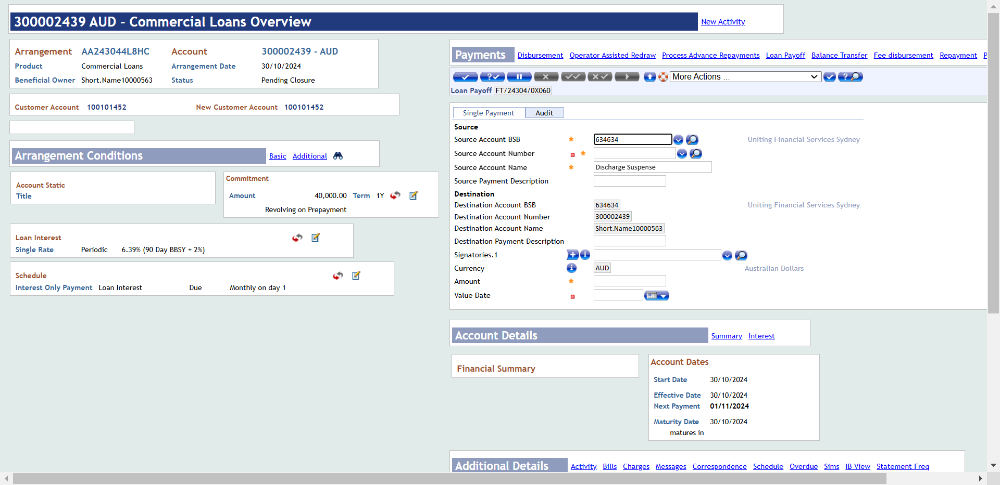Then from the newly opened window select the reason for loan closureStep skippedThen Click on validateStep skippedAnd Click on commitStep skippedThen click on accept overrideStep skippedAnd verify simulation status becomes Executed - SuccessfullyStep skippedThen switch back to main windowStep skippedWhen close all the other opened windowsStep skippedThen The user should be able to fill the commandlineStep skippedAnd user should be able to navigate to find loanStep skippedThen open the loan that need to be closedStep skippedThen click on the payoff statement from overfiew screen of loanStep skippedThen switch back to main windowStep skippedThen The user should be able to fill the commandlineStep skippedAnd user should be able to navigate to find loanStep skippedThen open the loan that need to be closedStep skippedAnd click on loan payoffStep skippedThen Enter the loan payoff detailsStep skippedThen Click on validateStep skippedAnd Click on commitStep skippedThen click on accept overrideStep skippedThen Verify whether the transaction complete message is displayedStep skippedThen switch back to main windowStep skippedAnd The User clicks on signoffStep skippedWhen close all the other opened windowsStep skippedThen Login to authoriser accountStep skippedThen The user should be able to fill the commandlineStep skippedAnd user should be able to navigate to find loanStep skippedThen open the loan that need to be closedStep skippedThen authorise loanpayoffStep skippedThen switch back to main windowStep skippedThen The user should be able to fill the commandlineStep skippedAnd user should be able to navigate to find loanStep skippedThen open the loan that need to be closedStep skippedAnd verify whether the loan status is moved to pending closureStep skipped
Then The user should be able to fill the commandlineAnd user should be able to navigate to find loanThen open the loan that need to be closedAnd Click on request payoffcom.frameium.stepdef.Hooks.afterEveryStep(io.cucumber.java.Scenario)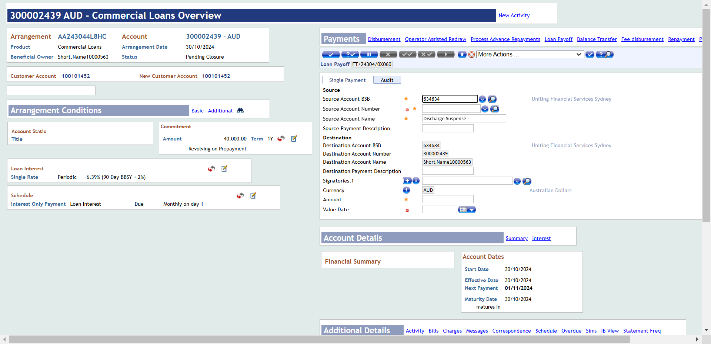Then from the newly opened window select the reason for loan closureStep skippedThen Click on validateStep skippedAnd Click on commitStep skippedThen click on accept overrideStep skippedAnd verify simulation status becomes Executed - SuccessfullyStep skippedThen switch back to main windowStep skippedWhen close all the other opened windowsStep skippedThen The user should be able to fill the commandlineStep skippedAnd user should be able to navigate to find loanStep skippedThen open the loan that need to be closedStep skippedThen click on the payoff statement from overfiew screen of loanStep skippedThen switch back to main windowStep skippedThen The user should be able to fill the commandlineStep skippedAnd user should be able to navigate to find loanStep skippedThen open the loan that need to be closedStep skippedAnd click on loan payoffStep skippedThen Enter the loan payoff detailsStep skippedThen Click on validateStep skippedAnd Click on commitStep skippedThen click on accept overrideStep skippedThen Verify whether the transaction complete message is displayedStep skippedThen switch back to main windowStep skippedAnd The User clicks on signoffStep skippedWhen close all the other opened windowsStep skippedThen Login to authoriser accountStep skippedThen The user should be able to fill the commandlineStep skippedAnd user should be able to navigate to find loanStep skippedThen open the loan that need to be closedStep skippedThen authorise loanpayoffStep skippedThen switch back to main windowStep skippedThen The user should be able to fill the commandlineStep skippedAnd user should be able to navigate to find loanStep skippedThen open the loan that need to be closedStep skippedAnd verify whether the loan status is moved to pending closureStep skipped -
Payment
18:12:54 PM / 39:12:395 Pass
Payment
10.29.2024 18:12:54 10.29.2024 18:22:07 39:12:395 · #test-id=1,154PassInternal transferWhen close all the other opened windowsWhen User opens the T24 Url Then User should be able to login to T24
Then User should be able to login to T24 Then The user should be able to fill the commandlineAnd user should be able to see the the balance of the account before performing internal transfer
Then The user should be able to fill the commandlineAnd user should be able to see the the balance of the account before performing internal transfer 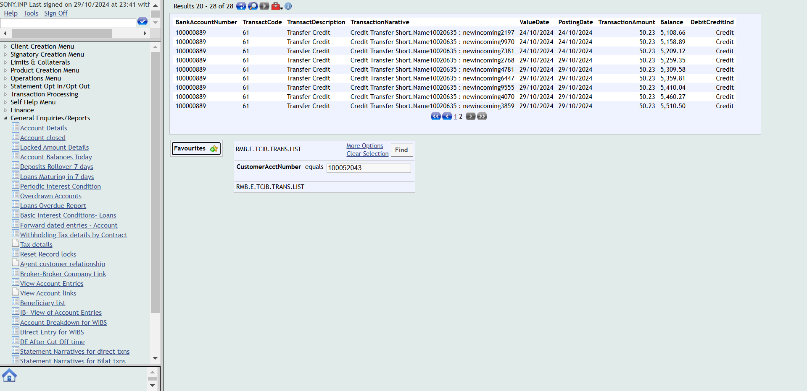Then The user should be able to navigate to Account transfer buttonAnd Enter the details in the account transfer fields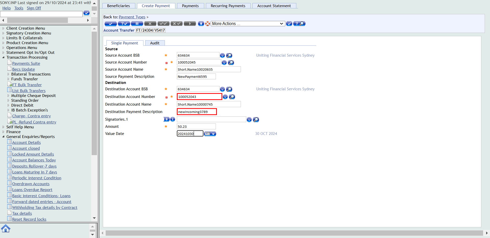Then Click on validateAnd Click on commitThen Verify whether the transaction complete message is displayed after commiting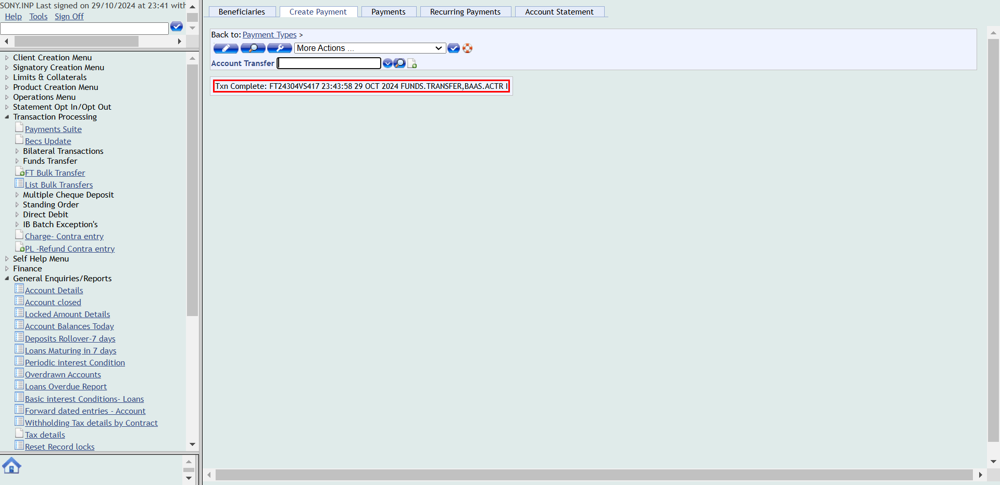And Navigate to account entriesThen Enter the account number and click on find buttonAnd Verify whether the transaction is reflected in the accountentries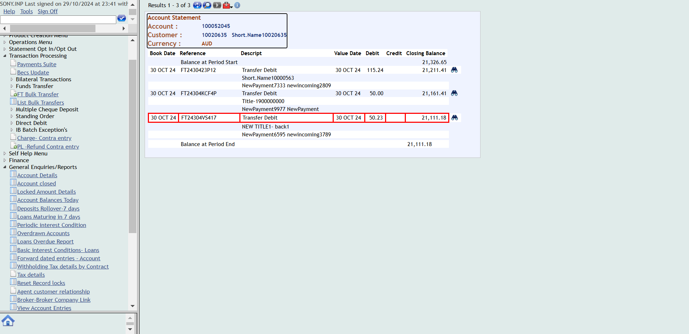PassInternal Transfer narrativeWhen close all the other opened windowsWhen User opens the T24 Url
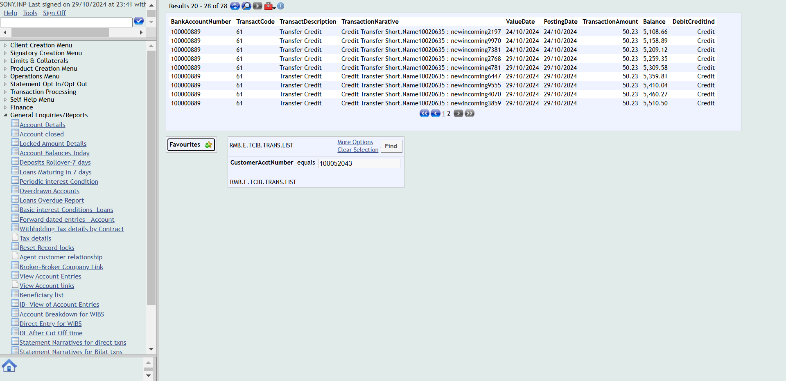Then The user should be able to navigate to Account transfer buttonAnd Enter the details in the account transfer fields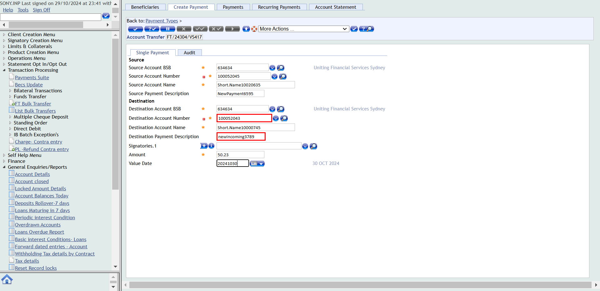Then Click on validateAnd Click on commitThen Verify whether the transaction complete message is displayed after commiting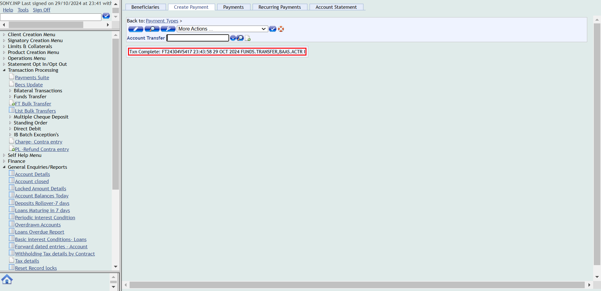And Navigate to account entriesThen Enter the account number and click on find buttonAnd Verify whether the transaction is reflected in the accountentries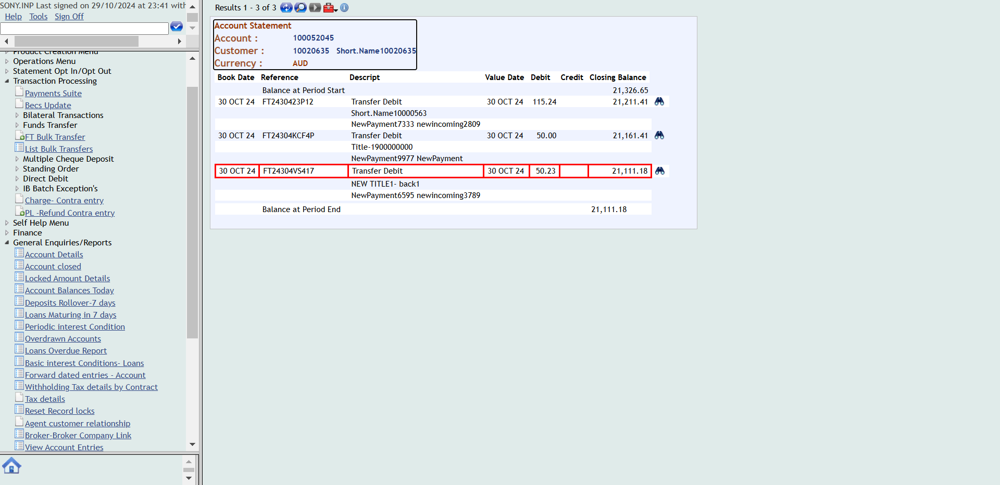PassInternal Transfer narrativeWhen close all the other opened windowsWhen User opens the T24 Url Then User should be able to login to T24
Then User should be able to login to T24 Then The user should be able to fill the commandlineAnd The user should be able to click on general enquiries buttomAnd click on the IB-view of account entriesThen Enter the account number
Then The user should be able to fill the commandlineAnd The user should be able to click on general enquiries buttomAnd click on the IB-view of account entriesThen Enter the account number And click on find buttonAnd The details of internal transfer should be reflected in the narratives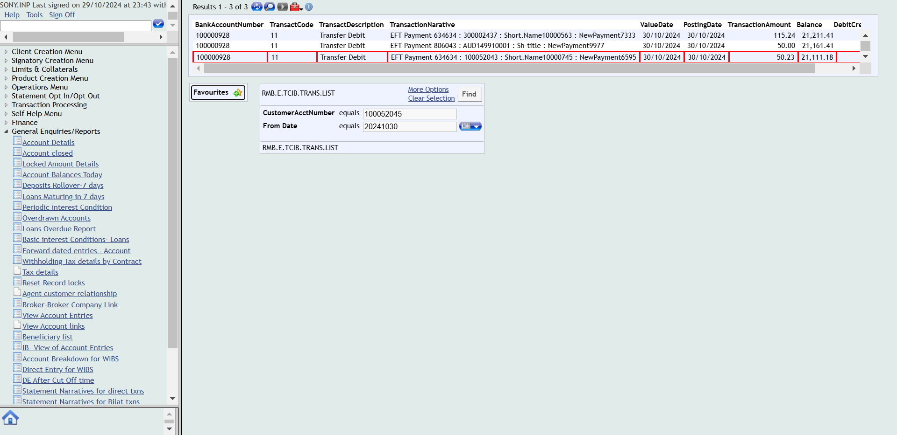
And click on find buttonAnd The details of internal transfer should be reflected in the narratives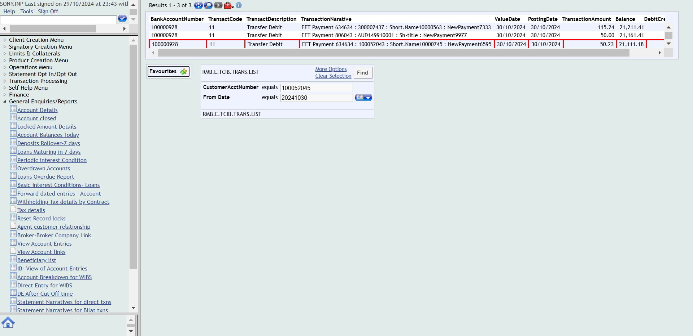 PassBalance Maintanance sweep transferWhen close all the other opened windowsWhen User opens the T24 Url
PassBalance Maintanance sweep transferWhen close all the other opened windowsWhen User opens the T24 Url Then User should be able to login to T24Then The user should be able to fill the commandlineAnd navigate to find account optionThen open the account that balance maintenance sweep transfer need to be appliedAnd reverse sweep transfer if any Sweep transfer is there and switch back to main menuThen navigate to operations menuAnd click on sweep maintainanceThen click on setup maintenance sweepAnd Enter the details for balance maintenance sweepThen Click on validateAnd Click on commitThen Verify whether the transaction complete message is displayed after commiting
Then User should be able to login to T24Then The user should be able to fill the commandlineAnd navigate to find account optionThen open the account that balance maintenance sweep transfer need to be appliedAnd reverse sweep transfer if any Sweep transfer is there and switch back to main menuThen navigate to operations menuAnd click on sweep maintainanceThen click on setup maintenance sweepAnd Enter the details for balance maintenance sweepThen Click on validateAnd Click on commitThen Verify whether the transaction complete message is displayed after commiting And navigate to find account optionThen open the account that balance maintenance sweep transfer need to be appliedAnd verify that balance maintenance sweep transfer is reflected in the overview page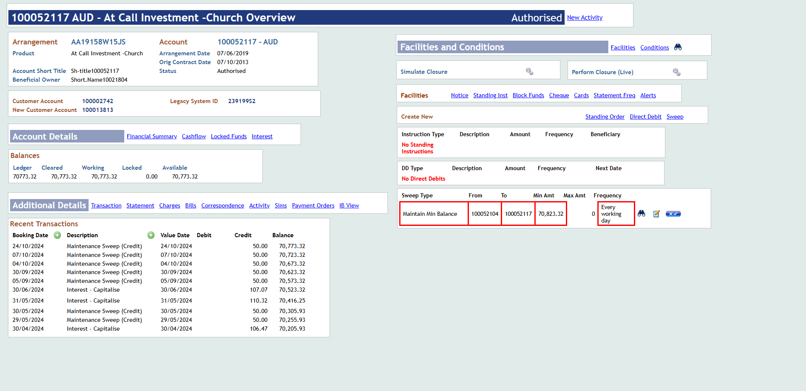PassSurplus sweep transferWhen close all the other opened windowsWhen User opens the T24 Url
And navigate to find account optionThen open the account that balance maintenance sweep transfer need to be appliedAnd verify that balance maintenance sweep transfer is reflected in the overview page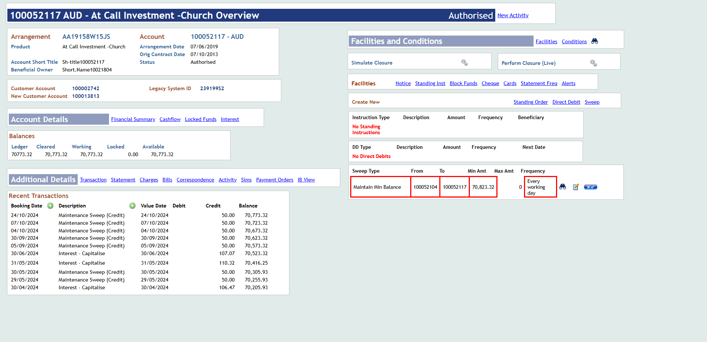PassSurplus sweep transferWhen close all the other opened windowsWhen User opens the T24 Url Then User should be able to login to T24
Then User should be able to login to T24 Then The user should be able to fill the commandlineAnd navigate to find account optionThen open the account that surplus sweep transfer need to be appliedAnd reverse sweep transfer if any Sweep transfer is there and switch back to main menuThen navigate to operations menuAnd click on sweep maintainanceThen click on setup surplus sweepAnd Enter the details for surplus sweepThen Click on validateAnd Click on commitThen Verify whether the transaction complete message is displayed after commiting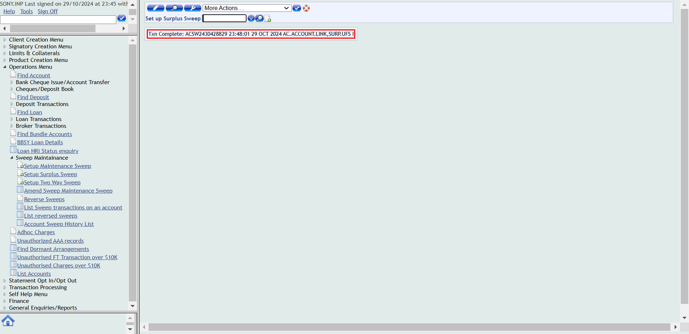And navigate to find account optionThen open the account that surplus sweep transfer need to be appliedAnd verify that Surplus sweep transfer is reflected in the overview page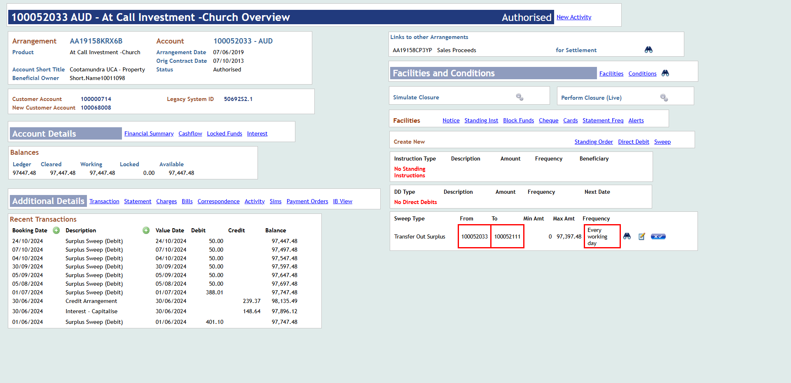PassTwo way sweep transfer SurplusWhen close all the other opened windowsWhen User opens the T24 Url
Then The user should be able to fill the commandlineAnd navigate to find account optionThen open the account that surplus sweep transfer need to be appliedAnd reverse sweep transfer if any Sweep transfer is there and switch back to main menuThen navigate to operations menuAnd click on sweep maintainanceThen click on setup surplus sweepAnd Enter the details for surplus sweepThen Click on validateAnd Click on commitThen Verify whether the transaction complete message is displayed after commiting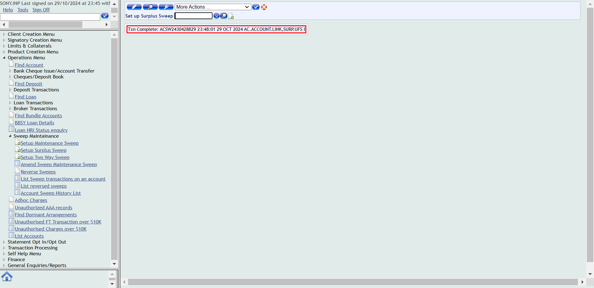And navigate to find account optionThen open the account that surplus sweep transfer need to be appliedAnd verify that Surplus sweep transfer is reflected in the overview page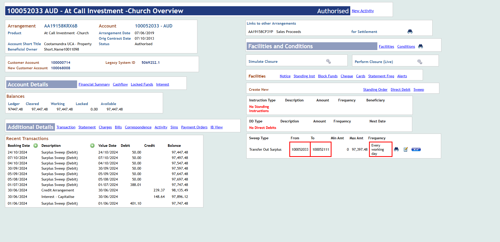PassTwo way sweep transfer SurplusWhen close all the other opened windowsWhen User opens the T24 Url Then User should be able to login to T24Then The user should be able to fill the commandlineAnd navigate to find account optionThen open the account that Two way sweep transfer-surplus need to be appliedAnd reverse sweep transfer if any Sweep transfer is there and switch back to main menuThen navigate to operations menuAnd click on sweep maintainanceThen click on Setup Two Way SweepAnd Enter the details Two way sweep surplusThen Click on validateAnd Click on commitThen Verify whether the transaction complete message is displayed after commitingAnd navigate to find account optionThen open the account that Two way sweep transfer-surplus need to be appliedAnd verify that Two way sweep transfer-surplus is reflected in the overview page
Then User should be able to login to T24Then The user should be able to fill the commandlineAnd navigate to find account optionThen open the account that Two way sweep transfer-surplus need to be appliedAnd reverse sweep transfer if any Sweep transfer is there and switch back to main menuThen navigate to operations menuAnd click on sweep maintainanceThen click on Setup Two Way SweepAnd Enter the details Two way sweep surplusThen Click on validateAnd Click on commitThen Verify whether the transaction complete message is displayed after commitingAnd navigate to find account optionThen open the account that Two way sweep transfer-surplus need to be appliedAnd verify that Two way sweep transfer-surplus is reflected in the overview page PassTwo way sweep transfer Balance maintenanceWhen close all the other opened windowsWhen User opens the T24 Url
PassTwo way sweep transfer Balance maintenanceWhen close all the other opened windowsWhen User opens the T24 Url Then User should be able to login to T24Then The user should be able to fill the commandlineAnd navigate to find account optionThen open the account that Two way sweep transfer-BalanceMaintenance need to be appliedAnd reverse sweep transfer if any Sweep transfer is there and switch back to main menuThen navigate to operations menuAnd click on sweep maintainanceThen click on Setup Two Way SweepAnd Enter the details Two way sweep BalanceMaintenanceThen Click on validateAnd Click on commitThen Verify whether the transaction complete message is displayed after commiting
Then User should be able to login to T24Then The user should be able to fill the commandlineAnd navigate to find account optionThen open the account that Two way sweep transfer-BalanceMaintenance need to be appliedAnd reverse sweep transfer if any Sweep transfer is there and switch back to main menuThen navigate to operations menuAnd click on sweep maintainanceThen click on Setup Two Way SweepAnd Enter the details Two way sweep BalanceMaintenanceThen Click on validateAnd Click on commitThen Verify whether the transaction complete message is displayed after commiting And navigate to find account optionThen open the account that Two way sweep transfer-BalanceMaintenance need to be appliedAnd verify that Two way sweep transfer-BalanceMaintenance is reflected in the overview page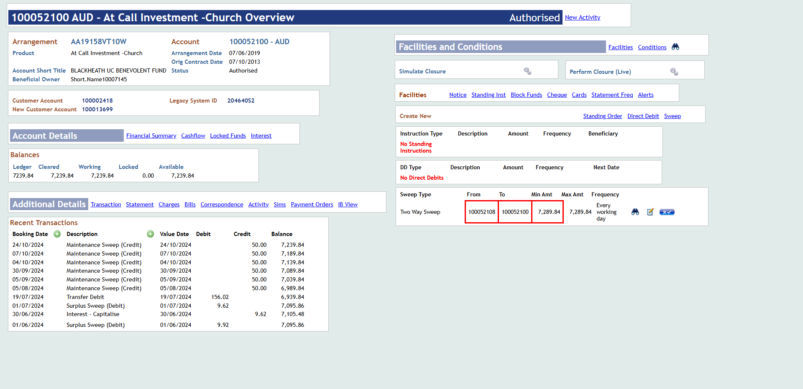
And navigate to find account optionThen open the account that Two way sweep transfer-BalanceMaintenance need to be appliedAnd verify that Two way sweep transfer-BalanceMaintenance is reflected in the overview page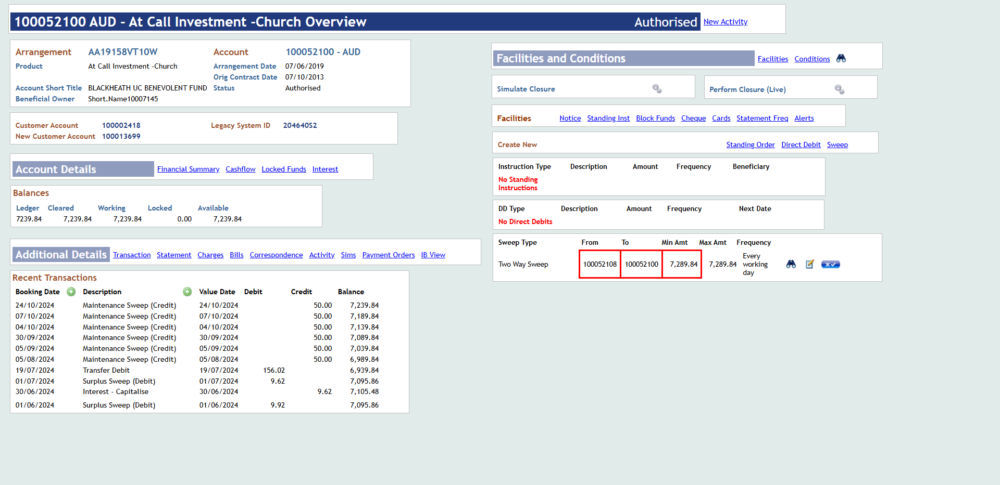
-
java.lang.NullPointerException
1 tests
java.lang.NullPointerException
1 failedStatus Timestamp TestName Fail 18:09:18 PM Then Verify whether the transaction complete message is displayed Lending operations.Loan Closure.Then Verify whether the transaction complete message is displayedFail 18:11:35 PM And Click on request payoff Lending operations.Loan Closure.And Click on request payoff -
org.openqa.selenium.ScriptTimeoutException
1 tests
org.openqa.selenium.ScriptTimeoutException
1 failedStatus Timestamp TestName Fail 17:58:15 PM And Click on commit Lending operations.Loan Creation.And Click on commit
-
@beforeCOBScenarios1
11 tests
@beforeCOBScenarios1
8 passed 3 failedStatus Timestamp TestName Pass 17:53:06 PM Deposit partial withdrawal Deposit.Deposit partial withdrawalFail 17:56:37 PM Loan Creation Lending operations.Loan CreationPass 17:59:24 PM Loan Creation Lending operations.Loan CreationFail 18:06:21 PM Loan Closure Lending operations.Loan ClosureFail 18:10:59 PM Loan Closure Lending operations.Loan ClosurePass 18:12:54 PM Internal transfer Payment.Internal transferPass 18:14:20 PM Internal Transfer narrative Payment.Internal Transfer narrativePass 18:14:59 PM Balance Maintanance sweep transfer Payment.Balance Maintanance sweep transferPass 18:16:49 PM Surplus sweep transfer Payment.Surplus sweep transferPass 18:18:40 PM Two way sweep transfer Surplus Payment.Two way sweep transfer SurplusPass 18:20:29 PM Two way sweep transfer Balance maintenance Payment.Two way sweep transfer Balance maintenance
Started
Oct 29, 2024 05:53:01 PM
Ended
Oct 29, 2024 06:22:19 PM
Features Passed
2
Features Failed
1
Features
Scenarios
Steps
Timeline
Tags
| Name | Passed | Failed | Skipped | Others | Passed % |
|---|---|---|---|---|---|
| @beforeCOBScenarios1 | 8 | 3 | 0 | 0 | 72.727% |